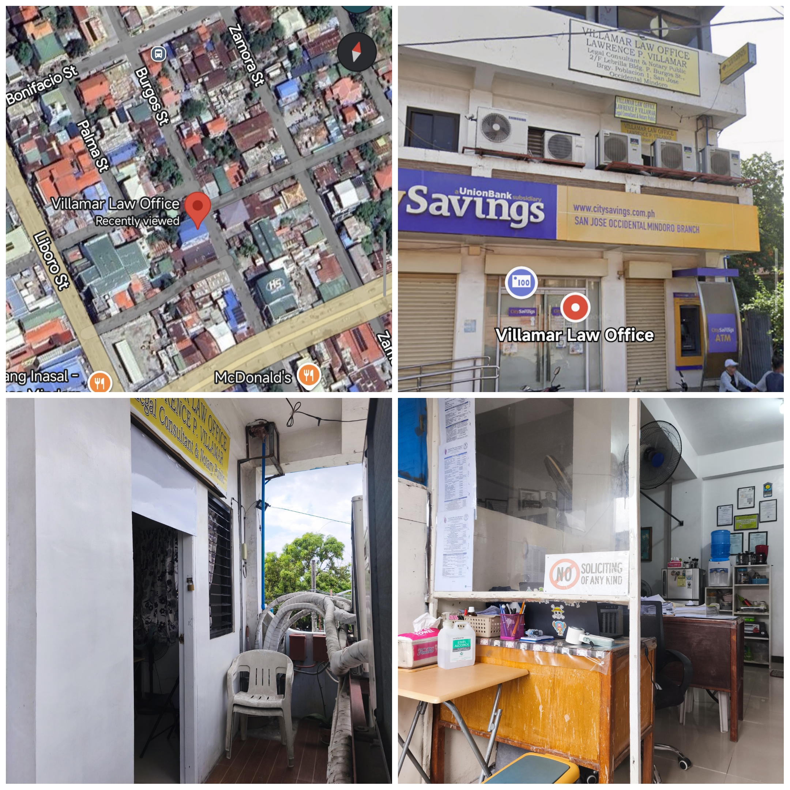

CHAPTER II: AGENCY PROFILE
NATURE OF AGENCY

Villamar Law Office Main Facade / Logo
BACKGROUND OF THE AGENCY
The practice started as Rañon, Villamar, and Associates in 1996 with an office at M.H. Del Pilar St., San Jose, Occ. Mindoro. Retired Judge Antonio Rañon and former public prosecutor Atty. Francis T. Villamar served as senior partners.
Upon the demise of Judge Rañon, Atty. Francis T. Villamar became a solo practitioner under the name F.T. Villamar Law Office. In 2018, Atty. Lawrence P. Villamar assumed the practice, renaming the office as Villamar Law Office.
LAWYER'S PROFILE
Atty. Lawrence P. Villamar
🎓 Education
- Bachelor in Public Administration & Governance - PUP
- College of Law (4 Years) - PUP
- Bachelor of Laws (LL.B.) - Manila Law College (2015)
💼 Professional Experience
Senate of the Philippines
Legislative Staff for Hon. Francis "Chiz" Escudero.
Corporate & Legal Counsel
Broadband Broadcast Services Inc. (Subic) & Puregold Price Club, Inc.
Handled criminal cases (theft), land acquisition, and labor cases.
House of Representatives
Congressional Staff for Hon. Feliciano "Sonny" Belmonte, Jr.
Aide for formal communications, speeches, and district affairs.
Solo Practitioner
Villamar Law Office
Assumed the practice as lead counsel and renamed the firm.